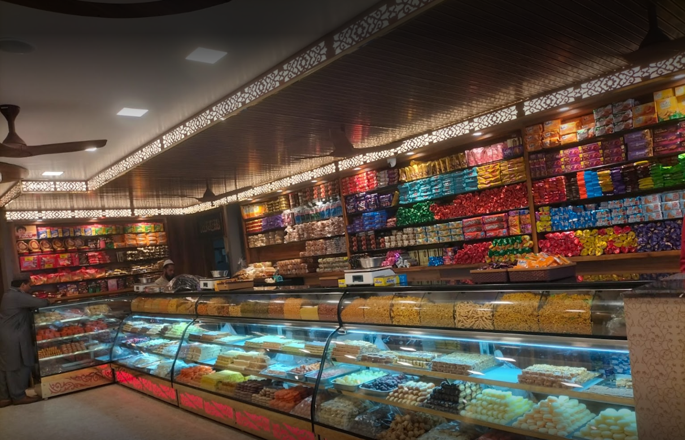

MAHARAJA SWEETS

- Legacy: Maharaja Sweets has a long-standing reputation in Gudiyatham and the surrounding areas. It has been serving customers for several decades, earning trust and loyalty through its quality sweets and snacks.
- Variety of Sweets: The shop offers a wide variety of traditional Indian sweets, ranging from classic favorites like Gulab Jamun, Jalebi, and Laddu to regional specialties such as Mysore Pak, Badusha, and Pootharekulu. These sweets are made using authentic recipes and high-quality ingredients, ensuring delicious flavors and textures.
- Quality and Hygiene: Maharaja Sweets is known for its commitment to quality and hygiene. The sweets are prepared in a clean and hygienic environment, adhering to strict standards of food safety and cleanliness. This attention to detail ensures that customers can enjoy their sweets with confidence.
- Innovation: While Maharaja Sweets specializes in traditional sweets, it also embraces innovation by introducing new varieties and flavors to cater to changing tastes and preferences. This blend of tradition and innovation allows the shop to appeal to a wide range of customers.
- Community Presence: Beyond being a sweet shop, Maharaja Sweets is deeply ingrained in the local community. It often sponsors or participates in community events, festivals, and charitable activities, further solidifying its reputation as a beloved establishment in Gudiyatham.
Click image to view MAHARAJA SWEETS in map